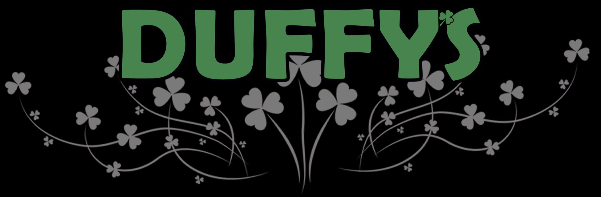
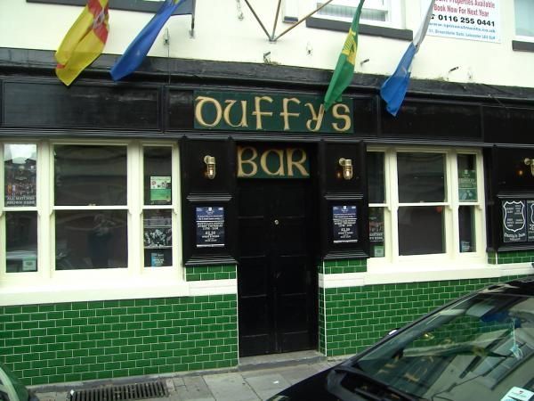

GRUNK
Listed time 19:00 · confirm doors with organiser

18 Pocklingtons Walk · Leicester
Irish run. Live music. A proper city centre pub.
Find the gig, then make your way to Duffy’s.
Live at Duffy’s
Find the date. Meet the band.
Continue to the existing event provider.
Listings snapshot checked 20 October 2026. Times are provider-listed, not confirmed door times. Check the event page for changes, ticket availability and entry rules.
Listed time 19:00 · confirm doors with organiser
Listed time 19:30 · confirm doors with organiser
Listed time 18:00 · confirm doors with organiser
Listed time 19:30 · confirm doors with organiser
Listed time 15:00 · confirm doors with organiser
Listed time 19:00 · confirm doors with organiser
Listed time 21:00 · confirm doors with organiser
No matching dates in this preview. Choose another month or check the live programme below.
Latest programme on BandsintownA city centre meeting place
An Irish bar on Pocklingtons Walk, with live music at its heart. For current pub hours, access information or a specific event, check with the venue before travelling.
Duffy’s on FacebookFind us
18 Pocklingtons WalkCheck event-specific doors, age rules and access arrangements directly. A ticket listing does not confirm ordinary pub opening hours.

Before the night
Choose a gig and build a short visit note. Ticket questions belong with the event provider. Questions about the room or access belong with the venue.
Local planning demo. Nothing is sent, saved or reserved. Use sample details only.